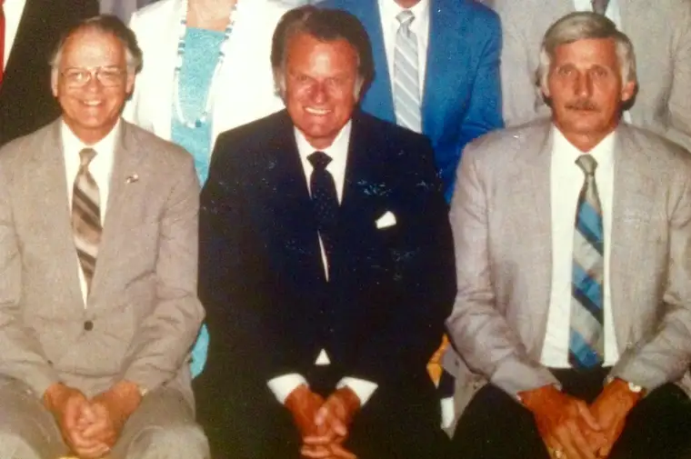

FARGO — When Billy Graham came to town in June 1987, Wayne Hoglund was already a Christian, but he was intrigued by meeting someone he considered a hero.
“It was exciting. There was electricity in the air, and it was a holy moment,” Hoglund says. “A lot of people went forward, and all those lives changed in some way.”
His father was one who went up for the altar call. “That was an answer to prayer,” says Hoglund, who was 33 at the time, and one of many trained counselors there to assist those with questions.
Hoglund calls Graham “a national pastor,” whose presence today would benefit our wounded world. “Everyone knew who he was, and even people who didn’t want anything to do with Christianity would listen to him.”
Spiritual training in the word of God, rather than politics, he says, is what will “change people’s hearts and cause a more stable world for people to live in.”
A larger “Peaks to Plains” crusade in Denver in July that year provided the catalyst for the Greater Red River Valley Billy Graham Crusade on North Dakota State University’s Dacotah Field.
The weekend drew an average of 22,000 people a night for three days; some out of sheer curiosity, and others, to deepen their relationship with Christ.
The Rev. Jim Bjorge, then-senior pastor of Fargo’s First Lutheran Church, was crusade chairman, but says the Rev. Art Grimstad, then-chair of Concordia College’s religion department, helped woo Graham here.
“Art was behind a lot of it, along with Dan Rothwell from First Assembly of God, one of the vice chairman, and Loren Eastman, the ministers’ chair: that’s how it got started.”
Tom Phillips of the Billy Graham Evangelistic Association arrived ahead of time, “laying the groundwork for the event,” which ultimately included a 2,500-member choir, 10,000 local volunteers, and attracted the likes of performers as Johnny Cash and his wife, June Carter.
The event was not without controversy. Along with the throngs of faithful, some anti-Graham leaflets appeared, along with atheists sporting anti-God signs.
Bjorge says even some of his fellow Lutherans weren’t keen on the idea. “The Lutheran tradition emphasizes the word and sacraments, but I believe where Christ is preached, faith follows,” he says. “We find scripture using the individual approach, but feeding the 5,000, that was like a crusade back at (Christ’s) time.”
Bjorge says he appreciated how even the local Catholic leaders of the day — including Bishop James Sullivan and the Rev. Al Bitz, pastor at St. Mary’s Cathedral — encouraged participation.
The Rev. Kurtis Gunwall, now a priest and vocations director for the Diocese of Fargo, was a 21-year-old fledgling Catholic then, a college student seeking direction.
“I had just moved to Fargo that summer and heard about the crusade,” Gunwall says, noting that he’d gotten involved in interdenominational Christian ministry while attending college in Milwaukee. “My faith was already strong, but I was trying to grow in it.”
Gunwall says he was grateful how Graham “encouraged people to get connected to a good church, and he didn’t exclude the Catholic Church from that.”
“I wasn’t there for all of it, just one evening, but it was definitely impactful,” Gunwall says. “I had a great respect for him and his ministry, and that was reinforced by being there.”
Bjorge says at the time, Billy Graham had personally impacted upwards of 106 million people, excluding television viewers. “His reach was significant.”
Now 86, Bjorge first heard Billy Graham speak at a Christian camp as a teenager, when Graham was mostly unknown. “I was very impressed. He’s such a fiery, alive type of preacher. You couldn’t help but listen,” he says. “It’s been fun to see the influence he’s had through the years.”
Graham was good about using both law and gospel in the proper way, he adds. “He warned about consequences of sin, but on the other hand, said, ‘Here’s the forgiving grace which can set you free.'”
“No one has matched him,” Bjorge says. “He was sort of a chosen vessel for that period. He was also a very humble guy who gave total credit to God…Graham always stepped aside so that the listening world would see and hear Christ.”
[For the sake of having a repository for my newspaper columns and articles, I reprint them here, with permission, a week after their run date. The preceding ran in The Forum newspaper on June 10, 2017.]